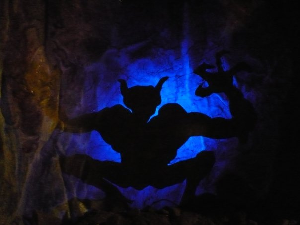

WWII
Many Jews hid in the underground to avoid Nazi capture and persecution. Because the passages are very complex, the hidden Jews survived (if they hadn't succumbed to disease or other natural causes). As a result, the Nazis didn't stay in Znojmo long, because after searching extensively above ground, they concluded that there was nothing there for them. Here is an inscription into the stone wall of what probably is a Jewish name.
